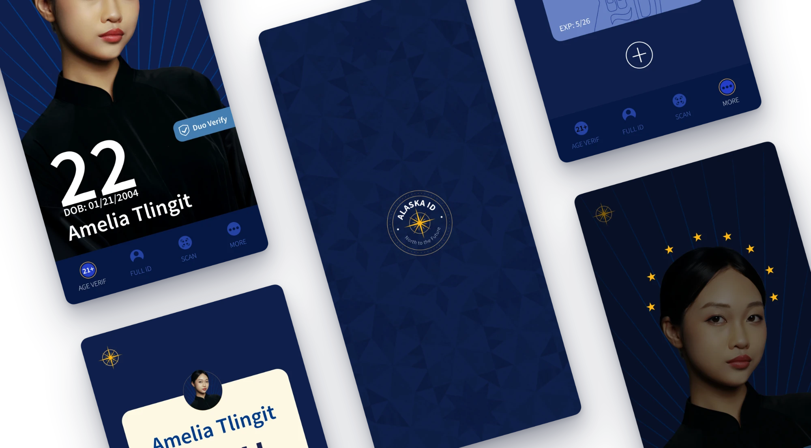
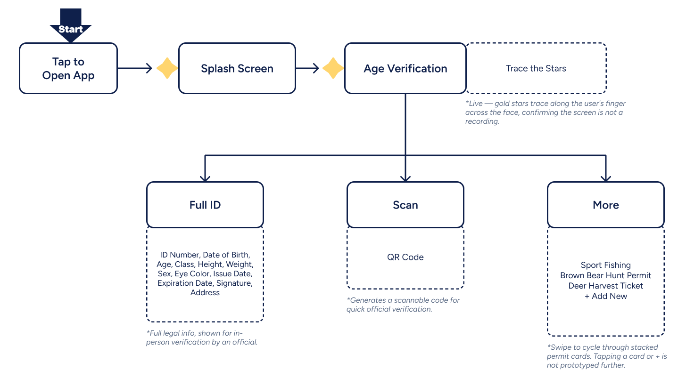
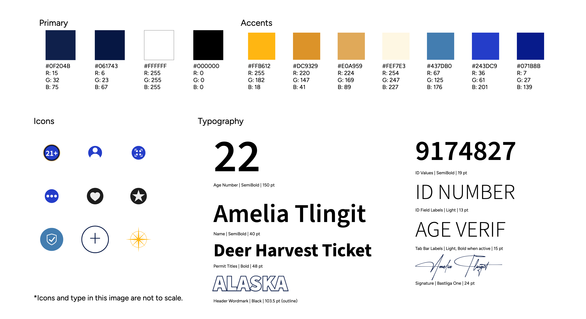
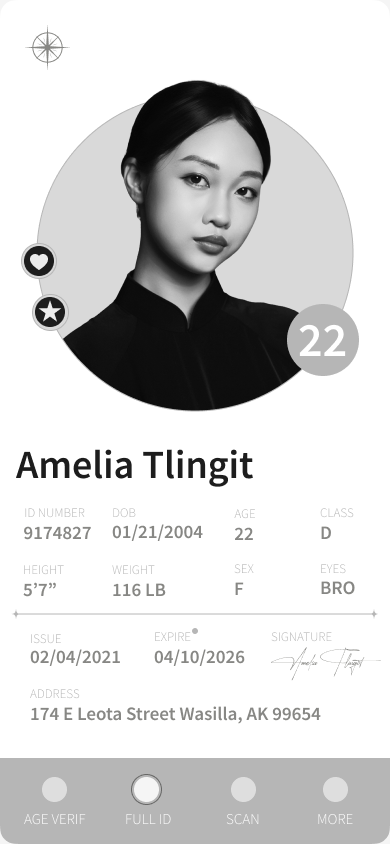
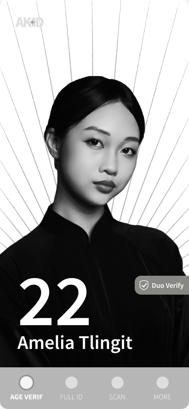
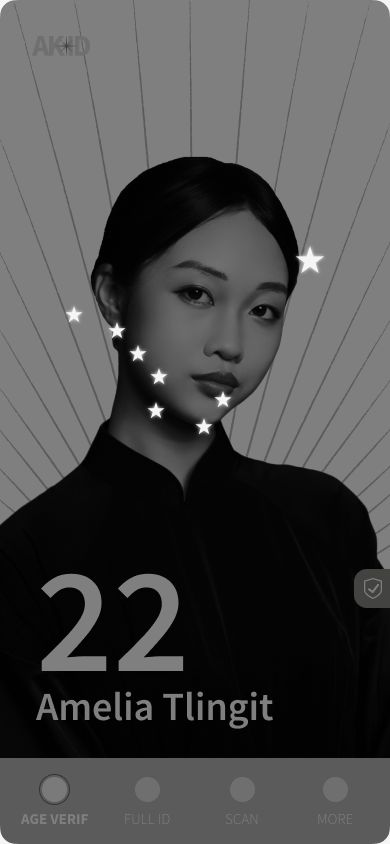
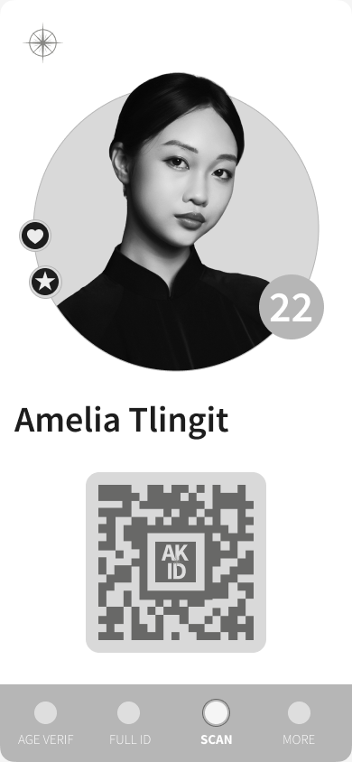
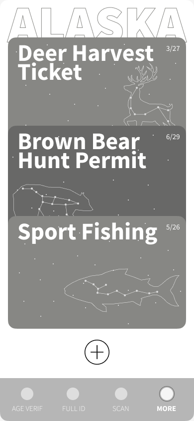
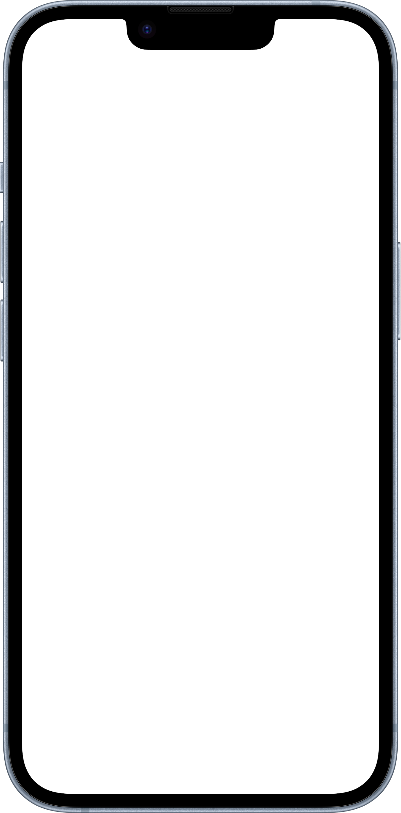

Alaska Digital ID

Overview
Completed over the span of 6 weeks, this project reimagines the driver’s license as a smartphone-based digital ID for the state of Alaska, with a full ID view and a quick age-verification view.
Workflows
Key:


Workflow Start
User Decision
User Action/Key Points
User Options

Style Guide

Wireframes





Final Prototype
